Lesson #4: NGram Tagging
In natural language processing, besides part-of-speech tagging, there exists another type of tagging where a given word is associated with the words occuring immediately before or after it. This is called N-Gram tagging, where N-Gram denotes a word token in a group of word tokens that occur together in a series of two, three, or more words.
For example, let's say we not only want to tokenize our words. We also want to know which words occur immediately after a given word, so we want to segment the text such that we get not only an individual word but the word that comes right after it. Alternatively, we might not only want a single word but also the words that comes immediately before it. This would be an example of Bigram Tagging, which is useful in searching for collocations (i.e. groups of two words that consistently occur together).
Let's develop an N-Gram tagger that can segment words such that a user can request an arbitrary number of words that occur either immediately before or immediately after a given word, or even both. In this way, we can study not just individual word tokens, but word tokens in their immediate linguistic context
Here is a simple class model diagram that shows how we build an N-Gram tagger that builds upon the BaseTagger and the LCTagger (i.e. LexicalClassTagger) classes that we defined earlier.
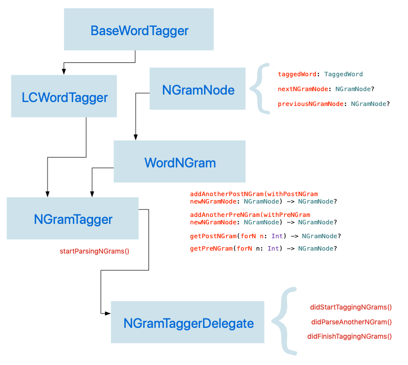In this diagram, you'll notice that we define a delegate protocl (i.e. NGramTaggerDelegate) for our NGramTagger class. The NGramTagger class will have a delegate on which it will call specific methods. Specifically, the NGramTagger will call delegate methods each time it parses an N-Gram, as well as when it begins parsing and when it ends parsing. The reason for using this delegate pattern is that N-Gram tagging is computationally very expensive and happens rather slowly. It's for that reason that we should perform N-Gram tagging asynchronously on a background queue or use a completion handler or a delegate class that will report tagged N-Grams as they are being processed.
In order to accomplish our N-Gram parsing, we will use a doubly-linked list to model N-Grams. Our data models consist of two classes: NGramNode and WordNGram, the former being a node in a doubly-linked list and the latter being the doubly-linked list itself.
We define these data models below:
Stored Properties
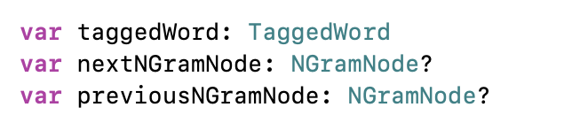Computed Properties
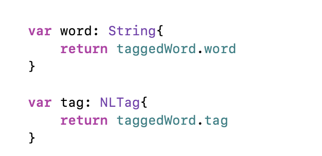Initializers
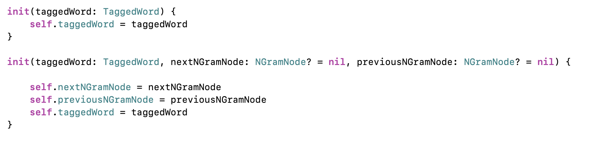Descriptions
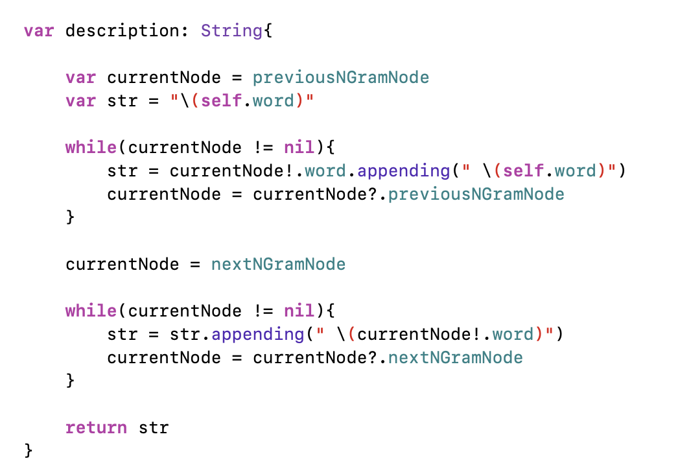WordNGram
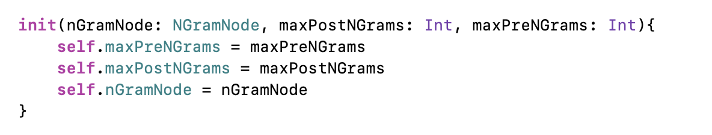 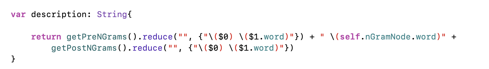 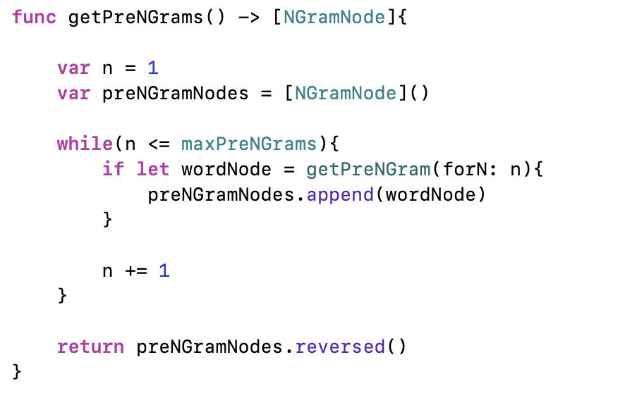 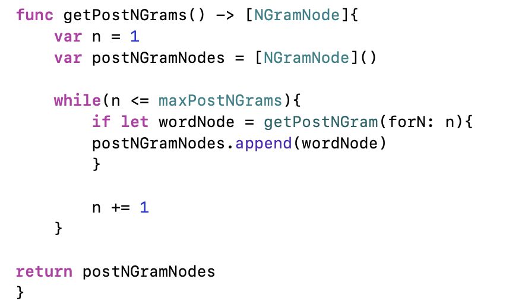
 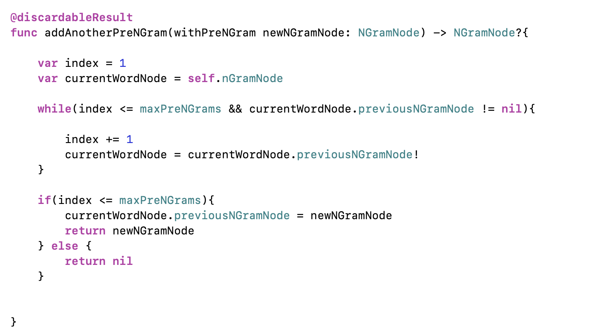
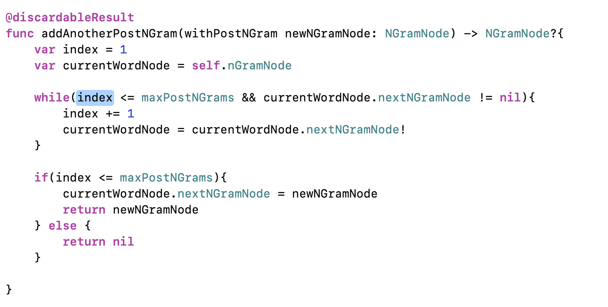
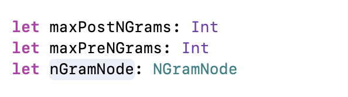
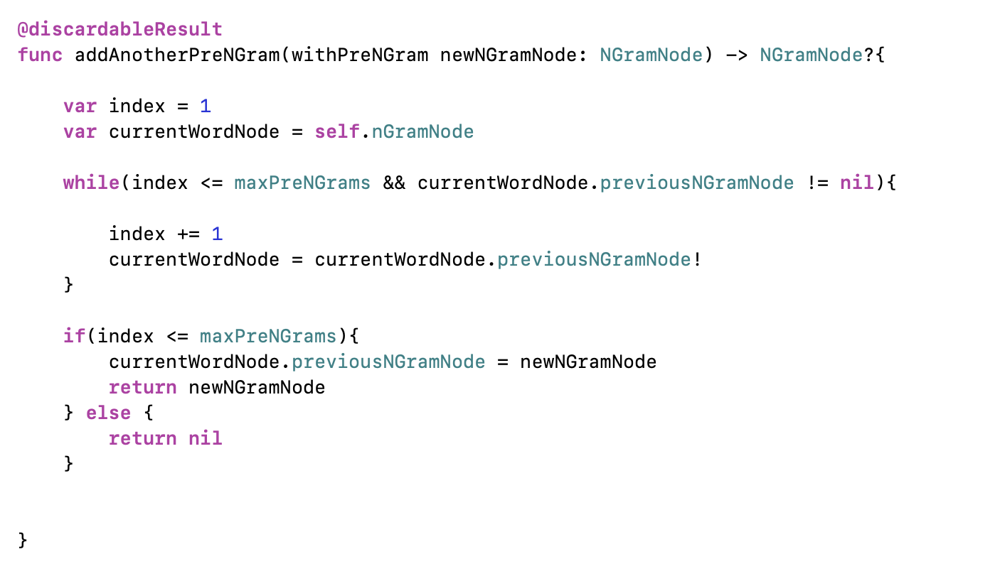
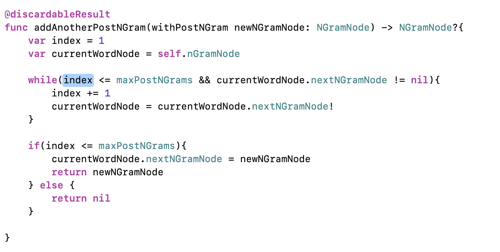
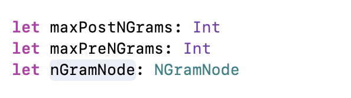